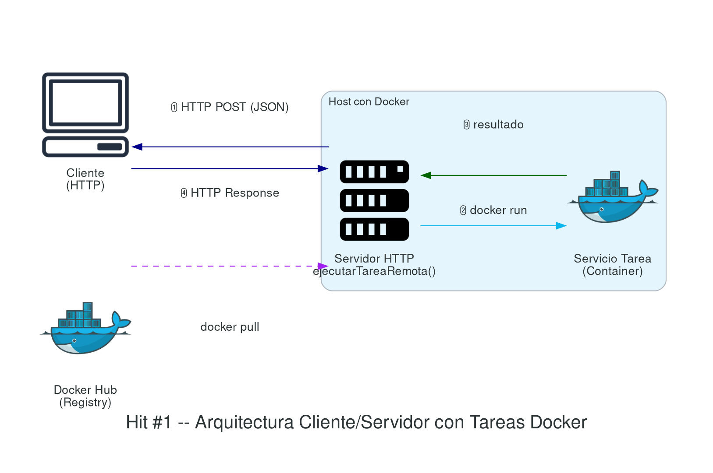
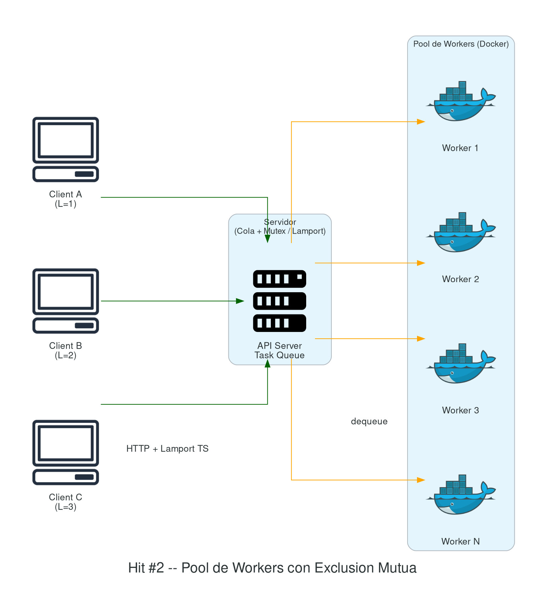
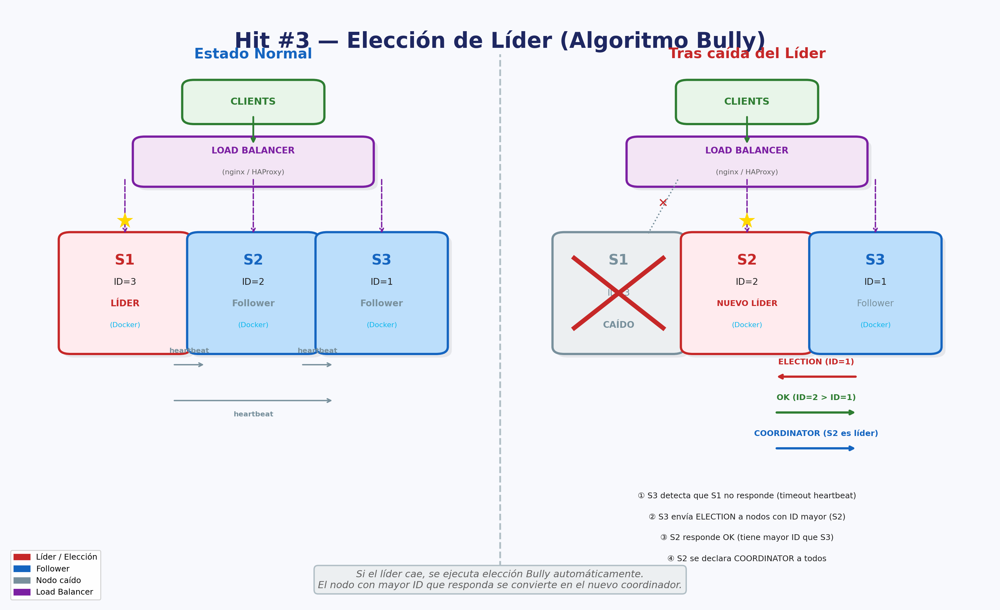

Trabajo Práctico Nº 2
Sistemas Distribuidos y Concurrencia
Fecha de entrega: 25/09/2026
Requisitos, consideraciones y formato de entrega
- Integrar herramientas de IA en su ciclo de vida de desarrollo (Cursor, ChatGPT/Codex, Claude, GitHub Copilot, etc.). Se espera que las utilicen como asistentes para codificar, depurar y documentar. En el informe, mencionen qué herramientas usaron y cómo les ayudaron.
- Se puede implementar con cualquier lenguaje dentro de los que se mencionaron en clase (node, python, java).
- Deben incluir una grabación video que se debe subir al repositorio donde se expliquen los servicios, componentes y configuraciones que tomaron en cuenta. Esto debe mostrar que comprenden cada punto y su desarrollo.
- Pruebas Unitarias y de Integración: Incluir un conjunto mínimo de pruebas automatizadas que cubren las funcionalidades críticas del proyecto.
- Generar un informe detallado que incluya respuestas a consultas, métricas y tiempos de evaluación, gráficas, diagramas de arquitectura y conclusiones.
- Mantener un repositorio público en un servicio de
control de versiones como GitHub, Bitbucket o GitLab. Cada ejercicio
(HIT #) debe contar con una carpeta y un README.md explicativo.
- El README.md de cada Hit debe incluir como mínimo: instrucciones para ejecutar el proyecto, diagrama de arquitectura, y decisiones de diseño tomadas.
- Compilar la aplicación para ejecución desde la terminal, con recursos preparados para ser desplegados directamente sin necesidad de abrir un IDE.
- Implementar un pipeline de CI/CD que automatice la compilación y el despliegue de la aplicación con cada nueva versión de código (GitHub Actions).
- Desplegar el servicio en un entorno público accesible desde Internet para su evaluación en producción (Despliegue en la nube).
- Proporcionar un endpoint público para cada servicio que permita verificar el estado de los principales servicios. No requiere GUI, puede devolver un JSON (Key=Servicio, value=Status). Ejemplos: https://status.lemon.me/, https://health.aws.amazon.com/health/status.
- Gestionar y mantener registros de actividades (logs) en memoria y disco.
- Seguridad:
- No commitear
.env, credenciales ni secrets al repositorio. Configurar.gitignoreapropiado desde el inicio. - Gestionar credenciales por ambiente de forma segura (GitHub Secrets, Secret Manager / Parameter Store). Zero static keys: autenticarse contra cloud providers vía Workload Identity / OIDC.
- Para registros Docker: usar image pull secrets o Workload Identity en lugar de enviar credenciales en payloads.
- Incluir gitleaks [GITLEAKS] en el pipeline de CI — si detecta un secret hardcodeado, el pipeline debe fallar.
- Si expusieron un secret accidentalmente, revóquenlo de inmediato y generen uno nuevo: queda en el historial de Git aunque después lo eliminen.
- No commitear
Contenidos del programa relacionados
- U1.6 Comunicación Cliente-Servidor (HTTP, JSON).
- U2.1 Sincronización de relojes: relojes lógicos de Lamport.
- U2.2 Exclusión mutua: algoritmos centralizado, distribuido, Token Ring.
- U2.3 Bloqueos en Sistemas Distribuidos: detección y prevención.
- U2.4 Hilos (Threads): empleo y diseño de paquetes de hilos.
- U4.3 Contenedores Docker: imágenes, Dockerfile, Docker Hub.
Práctica
Hit #1 — Tareas remotas en contenedores
Implementen un servidor que resuelva “tareas arbitrarias” empaquetadas como contenedores Docker [DOCKER, MER14]. Conjunto de acciones de diseño y arquitectura que deben respetarse:
Servidor
- Desarrollar el servidor utilizando tecnología HTTP.
- El servidor debe estar contenerizado y alojado en un host con Docker instalado.
- Debe permanecer receptivo a nuevas solicitudes del cliente, exponiendo métodos para interactuar.
- Debe incluir un método
ejecutarTareaRemota()asociado a un endpoint (getRemoteTask()) que procese las tareas enviadas por el cliente. - Los parámetros de las tareas se reciben vía HTTP POST con cuerpo JSON.
- Durante la ejecución, el servidor levanta temporalmente un “servicio tarea” como contenedor Docker.
- Una vez en funcionamiento, se comunica con el “servicio tarea” para ejecutar la lógica con los parámetros proporcionados.
- Espera los resultados de la tarea y los devuelve al cliente.
Servicio tarea
- Establecer un servicio de escucha vía HTTP.
- Implementar la tarea de procesamiento
ejecutarTarea(). - Configurar el servicio para recibir los parámetros de entrada en formato JSON.
- Empaquetar la solución como imagen Docker para facilitar la distribución y el despliegue.
- Publicar la solución en Docker Hub [DHUB], pública o privada.
Cliente
- Hacer una solicitud HTTP POST contra el servidor.
- Enviar los parámetros necesarios en formato JSON, incluyendo:
- El cálculo a realizar.
- Los parámetros específicos requeridos por la tarea.
- Datos adicionales necesarios para el procesamiento.
- La imagen Docker que contiene la solución de la tarea.
Importante (Seguridad): Las credenciales de acceso al registro Docker NO deben enviarse en el payload del request. Como parte de este hit, investigue e implemente una forma segura de autenticar al servidor contra el registro Docker sin exponer credenciales en tránsito (por ejemplo: image pull secrets, tokens de acceso de corta duración, OIDC federation, o configuración previa en el host). Documente la solución elegida y justifique por qué es más segura que enviar usuario y contraseña en el JSON.

Hit #2 — Concurrencia y exclusión mutua
Modifiquen el servidor del Hit #1 para que acepte múltiples tareas concurrentes. Para ello:
- Pool de workers: implementar un pool con un límite configurable (por ejemplo, N workers máximos). Cada worker ejecuta una tarea en un contenedor Docker independiente.
- Exclusión mutua: cuando llegan más tareas que workers disponibles, las tareas deben encolarse. Implementen la cola con exclusión mutua para garantizar que no haya race conditions al asignar tareas. Pueden usar un mutex distribuido o implementar el algoritmo de Ricart-Agrawala [RIC81] para el acceso a la cola compartida.
- Relojes lógicos: implementen timestamps lógicos (relojes de Lamport) [LAM78] en los mensajes entre cliente y servidor para ordenar las solicitudes de manera consistente.
- Medición de throughput: midan y documenten el throughput del sistema (tareas completadas por minuto) variando la cantidad de workers: 1, 2, 4 y 8. Presenten los resultados en una tabla y grafiquen la curva de escalabilidad. Analicen si el speedup es lineal o si hay un cuello de botella — la ley de Amdahl [AMD67] es la herramienta teórica para razonar este límite. Considerando que todo corre en un solo equipo: ¿cuáles son los recursos compartidos que podrían convertirse en cuello de botella (CPU, memoria, I/O de disco, red de Docker, daemon de Docker)? ¿Cómo los identificarían y medirían?

Hit #3 — Coordinación y tolerancia a fallos
Desplieguen 2 o más instancias del servidor del Hit #1 detrás de un balanceador de carga (pueden usar nginx [NGINX], HAProxy o un load balancer en la nube).
Implementen un mecanismo de elección de líder utilizando el algoritmo Bully [GAR82] para que uno de los nodos actúe como coordinador del sistema. El coordinador será responsable de:
- Asignar tareas entrantes a los nodos workers disponibles.
- Mantener el registro de estado de cada nodo.
- Si el líder/coordinador se cae (simúlenlo matando el proceso), otro nodo debe detectar la caída y tomar el control automáticamente mediante una nueva elección.
Documenten en el informe: el diagrama de secuencia de una elección de líder, el tiempo de recuperación ante una caída del coordinador, y cómo se redistribuyen las tareas pendientes.

Referencias y Bibliografía
- [AMD67] Amdahl, G. M. (1967). “Validity of the Single Processor Approach to Achieving Large Scale Computing Capabilities”. AFIPS Conference Proceedings, 30, 483–485.
- [DHUB] Docker Hub — Container Image Library. https://hub.docker.com/
- [DOCKER] Docker Documentation. https://docs.docker.com/
- [GAR82] Garcia-Molina, H. (1982). “Elections in a Distributed Computing System”. IEEE Transactions on Computers, C-31(1), 48–59.
- [GITLEAKS] gitleaks — Protect and discover secrets using Gitleaks. https://github.com/gitleaks/gitleaks
- [LAM78] Lamport, L. (1978). “Time, Clocks, and the Ordering of Events in a Distributed System”. Communications of the ACM, 21(7), 558–565.
- [MER14] Merkel, D. (2014). “Docker: Lightweight Linux Containers for Consistent Development and Deployment”. Linux Journal, 2014(239).
- [NGINX] nginx Documentation — Load Balancing. https://nginx.org/en/docs/http/load_balancing.html
- [RIC81] Ricart, G. & Agrawala, A. K. (1981). “An Optimal Algorithm for Mutual Exclusion in Computer Networks”. Communications of the ACM, 24(1), 9–17.
- [TAN17] Tanenbaum, A. S. & Van Steen, M. (2017). Distributed Systems: Principles and Paradigms (3rd ed.). Pearson. — Cap. 6: Sincronización.